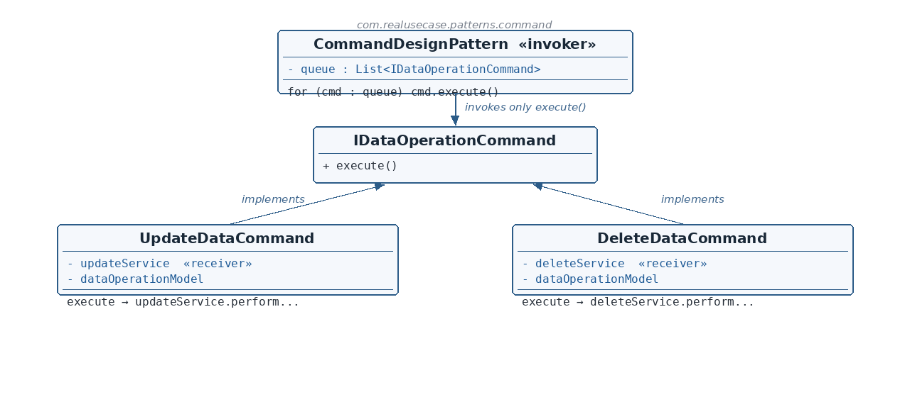

IDataOperationCommand.java — the Command
☕ 4 min read · 🎬 Video walkthrough · 📊 UML diagram · 💻 Runnable code
⚡ In a nutshell — Encapsulate a request as an object: a Command binds together a receiver and the action to perform on it.
Encapsulate a request as an object: a Command binds together a receiver and the action to perform on it. Once requests are objects, they can be queued, logged, delayed, retried, or undone — and the invoker that runs them needs to know only one method: execute().
When a schema changes, follow-up work — updating references, deleting stale references — shouldn't run inline with the user's request. Production systems queue these as jobs and drain the queue later (a worker, a scheduler, a Kafka consumer). Each job must carry everything it needs: what to do and what to do it to. This module models that: each command binds a service (the receiver) with a DataOperationModel (the payload); the main loop drains the queue calling only execute() — it has no idea one command updates and another deletes.
IDataOperationCommand is the Command interface — a single execute().UpdateDataCommand / DeleteDataCommand are Concrete Commands: each holds its receiver (an update/delete service interface) and the payload (DataOperationModel), binding them at construction.IPerformUpdateOperationsService, IPerformDeleteOperationsService) — supplied as lambdas in the demo, real services in production.execute(), never a receiver method.
Reading the diagram: the invoker holds a queue typed to the command interface and calls only execute(). Each concrete command privately bundles its receiver and payload — the invoker can't see either.
IDataOperationCommand — Command — the one-method execute() contract.UpdateDataCommand / DeleteDataCommand — Concrete commands — receiver + payload bound at construction.IPerformUpdateOperationsService / IPerformDeleteOperationsService — Receivers — the services that do the real work.DataOperationModel — Payload — the schema id the work applies to.CommandDesignPattern — Invoker — queues commands, drains with execute() only.public interface IDataOperationCommand {
void execute();
}
public interface IPerformUpdateOperationsService {
void performUpdateOperations(DataOperationModel dataOperationModel);
}
UpdateDataCommand.java — a Concrete Commandpublic class UpdateDataCommand implements IDataOperationCommand {
private final IPerformUpdateOperationsService updateService;
private final DataOperationModel dataOperationModel;
public UpdateDataCommand(IPerformUpdateOperationsService updateService,
DataOperationModel dataOperationModel) {
this.updateService = updateService;
this.dataOperationModel = dataOperationModel;
}
@Override
public void execute() {
updateService.performUpdateOperations(dataOperationModel);
}
}
execute() then needs no arguments; it simply applies the receiver to the payload. DeleteDataCommand is identical in shape with the delete service.CommandDesignPattern.java — the InvokerDataOperationModel model = new DataOperationModel("schema-1");
List<IDataOperationCommand> queue = new ArrayList<>();
queue.add(new UpdateDataCommand(
m -> System.out.println("updating references for " + m.getSchemaId()), model));
queue.add(new DeleteDataCommand(
m -> System.out.println("deleting references for " + m.getSchemaId()), model));
System.out.println("queued " + queue.size() + " commands");
for (IDataOperationCommand command : queue) {
command.execute();
}
command.execute(). It cannot tell an update from a delete — which means new command types join the queue with zero changes to this loop.execute()? A zero-argument execute() makes every command uniform and self-contained — exactly what a queue, scheduler, or retry mechanism requires.$ java -cp target/classes com.realusecase.patterns.CommandDesignPattern
queued 2 commands
updating references for schema-1
deleting references for schema-1
Runnable/Callable submitted to executors — the JDK's own command objects.A request, boxed with everything it needs — run it now, later, or not at all.
👏 Found this useful? Give it a few claps so more developers discover it, and follow for the whole series — every article ships with a UML diagram, runnable code, a narrated video, and a companion PDF. Happy building! 🚀